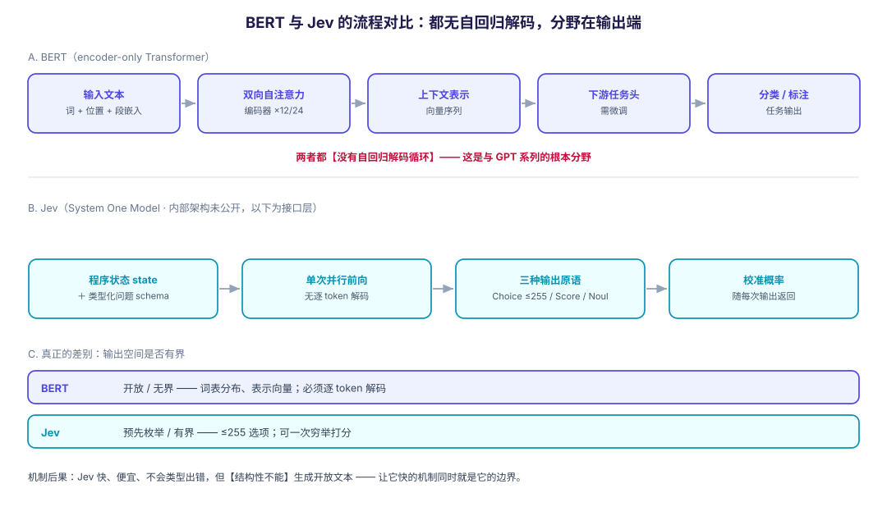

2026-09-16 · Damon + Nemesis · 分类：LLM 架构 / 模型对比 · 标签：Jev, TypeSafe, System One, BERT, Encoder, RLCD, 校准, 类比
一、先说事实边界：Jev 的架构并未公开
这一节必须放在最前面，否则后面所有"异同"都会被误读成已证实的架构结论。
TypeSafe AI 于 2026-09-15 发布 Jev（创始人 Diogo Almeida，ChatGPT 的共同发明者之一），把它称为 System One Model。按公开材料的确定性，可以分三层：
| 层级 | 内容 |
|---|---|
| 官方确认 | 不生成字符串；接收非结构化程序状态；单次前向（single parallel pass）返回类型化决策；三种输出原语；训练方法叫 RLCD；每次输出附带校准概率；输入 $0.042/MTok、输出免费；延迟 70–500ms |
| 官方未公开 | 奖励函数、架构（层数、注意力形式）、训练过程、校准方法。批评方的原话是：这些"全部未公开，没有已发表的校准曲线，也没有可独立复现的论文" |
| 第三方推测 | Hacker News 上的判断："像是一个专用化的 encoder-only(-ish) Transformer，配 scalar 和 ordinal 输出头；实际上是非因果的，大概也不是自回归的"；以及"也许是一个 decoder 产生置信度而非语言"的 Transformer |
所以本文的"异同"，是在"输入输出接口与计算形态"这一层比较，不是在"内部结构"这一层比较。凡是涉及内部的表述，我都会标明是推测。
二、对照基线：BERT 的原理
BERT 是 encoder-only Transformer，它的设计与 Jev 的可比性恰恰在于两者都不做自回归解码。
结构
- 只用 Transformer 的编码器堆叠（BERT-base 12 层，BERT-large 24 层）；
- 自注意力双向——没有因果掩码，每个位置都能看到左右两侧。这正是它与 GPT 系列的根本差别；
- 输入表示 = 词嵌入 + 位置嵌入 + 段嵌入，配
[CLS]/[SEP]特殊 token。
训练
- MLM（掩码语言建模）：随机遮住约 15% 的词，让模型根据双侧上下文还原；
- NSP（下一句预测）：判断两句是否相邻；
- 这两项都是自监督——标签从数据自身构造，不需要人工标注。
使用
- 预训练产出的是上下文表示：一串向量，而不是最终答案；
- 下游任务靠加一个任务头再微调——分类头、序列标注头等。
关键点：BERT 的输出是"表示"，决策发生在它之外（在任务头与调用它的代码里）。
三、Jev 的原理（仅就公开部分）
输入：非结构化程序状态（文本、JSON 状态等），外加一组事先定义好的类型化问题。
输出：三种原语——
| 原语 | 含义 |
|---|---|
| Choice | 从至多 255 个预定义选项中选一个 |
| Score | 在一个刻度上给一个值 |
| Noul | 一个校准过的"是/否"概率 |
过程：所有问题在同一次前向里算完，没有逐 token 解码循环。这也解释了为什么"输出 token 免费"——单次前向之后没有可计费的解码步骤。
训练：RLCD（Reinforcement Learning for Calibrated Decisions）。把它和另外两种 RL 并排看最清楚：
| 方法 | 奖励信号衡量什么 |
|---|---|
| RLHF | 人类评分者是否更偏好这个输出 |
| RLVR | 输出是否可被程序客观验证为正确 |
| RLCD | 模型自报的置信度是否与它在大量决策上的实际正确率匹配 |
"校准"到底是什么意思：标准是天气预报。一个说"70% 会下雨"的预报员，在 100 个这样的日子里应该有约 70 天下雨——不是 95 天（过度自信），也不是 40 天（自信不足）。要点是：
校准是群体的性质，不是单个答案的性质。 一个校准完美的模型，单个答案依然可以是错的。
为什么快：因为输出空间小且预先枚举，模型可以一次前向就给每个候选答案算出概率，而不必逐 token 解码。这一条同时解释了三件事——快、便宜、以及结构性地不会产生类型错误（输出被 schema 约束）。
反过来说：这也正是 Jev 做不了开放生成、代码生成、对话的原因——那些任务的输出空间实际上是无界的（任意字符串），无法像"255 选 1"那样一次穷举打分。让它快的机制，同时就是让它做不了别的事的机制。
四、逐维对比
| 维度 | BERT（encoder-only） | Jev（System One） |
|---|---|---|
| 输出空间 | 开放：词表上的分布 / 表示向量 | 预先枚举且有界：≤255 选项 / 标量 / 布尔 |
| 有无自回归解码循环 | 无 | 无 |
| 注意力方向 | 双向（明确，无因果掩码） | 推测为非因果（"acausal in effect"，未经证实） |
| 一次前向产出什么 | 每个位置的上下文表示 | 所有问题的答案 + 每个答案的校准概率 |
| 训练目标 | MLM + NSP（自监督）→ 任务微调 | RLCD（强化校准） |
| 换任务要做什么 | 微调 / 换任务头（需要重训） | 改调用时的 schema（不重训） |
| 输出语义 | 表示（谁来用它、怎么用，由外部决定） | 决策 + 可直接分支的概率 |
| 能否生成文本 | 本身不生成，但可接生成头 | 结构性不能 |
| 是否给出理由 | 不涉及 | 不提供（只有数字，没有 rationale） |
| 主要失败模式 | 表示有偏、下游过拟合 | 校准失灵、无理由可审计 |
4.1 相似点：它们其实是同一阵营的
在"不做自回归解码"这一条上，BERT 与 Jev 的相似度高于 BERT 与 GPT 的相似度。两者都是"读入 → 一次前向 → 输出"，都不是"逐 token 边想边写"。
如果 HN 的推测（encoder-only + 输出头）成立，那么 Jev 在计算形态上更接近 "BERT 加一个特殊头"，而不是接近任何 GPT。Jev 的"head"特殊之处在于：它不是一个线性分类器，而是一个由 RL 训练、要求概率校准、且能同时回答多个类型化问题的并行读出结构。
4.2 差异点：不在编码器，在输出端
真正拉开距离的地方是输出的性质，而非读入的机制：
- BERT 的输出是"可复用的表示空间"——灵活，但它把"这表示意味着什么决定"这一责任推给了下游；
- Jev 的输出是"绑定到调用者 schema 的决策分布"——不灵活，但可以直接进代码分支。
4.3 一条容易讲反的差异：可配置性的方向
直觉上"专用的东西更不灵活"，但在这个对比里要小心：
- BERT 换任务要重新微调 → 任务维度的适配成本高；
- Jev 换任务只改 schema，不必重训 → 运行时适配成本低。
也就是说：Jev 是"输出维度上的专用、任务维度上的通用"。它能服务的任务种类可以很多（任意 schema），但每个答案必须落在预先划定的小集合里。这与"专用芯片"的直觉并不一致——后面讲类比时会回到这一点。
五、硬件类比：ASIC/PLA 与 FPGA/CPU，成立到哪里
你的类比是：Jev : BERT ≈ ASIC/PLA : FPGA/CPU。
结论：作为经济结构的第一直觉是好的，但作为架构类比有三处硬伤，其中一处方向讲反了。

5.1 类比成立的三点
- 专用换效率的经济结构：固定功能换取数量级的效率/成本优势。Jev 用"放弃字符串生成"换来两个数量级的提速与降本，这与 ASIC 用"放弃通用性"换 ppa 是同一种交易结构。
- 约束是结构性的，不是调参能绕过的：ASIC 跑不了任意程序；Jev 生成不了开放文本。两者都是"由构造决定的不可能"，而不是"性能不够好"。
- 边际成本结构：ASIC 固定成本极高、单位成本近零；对应地，Jev 的输出 token 免费——单次前向之后没有可计费单元。而 CPU（通用 LLM）按 token 计费，边际成本随输出长度线性增长。
5.2 类比失效的三点
① 层错位：这是软件层差异，不是硅片差异
ASIC 与 FPGA 是不同的芯片。Jev 与 BERT 很可能跑在同一块 GPU 上——它们的差异在输出接口、训练目标与读出结构，不在制造工艺。把软件层的接口差异套进"专用芯片 vs 通用芯片"的框架，会让人误以为 Jev 有什么特殊的硬件。
② 可配置性的方向被讲反了（最重要的一条）
FPGA 的"可编程"指的是制造之后改连线。而在这个对比里：
- Jev 允许每次调用更换 schema——同一个模型，运行时给不同的类型化问题；
- BERT 换任务需要重新微调——要改变模型参数。
按"运行时可否重配置"这个轴看，Jev 反而更靠 FPGA/可编程一侧，BERT 更靠"烧进去就不动"一侧。原类比把 Jev 放在 ASIC（最不灵活）那一端，方向是反的。
更准确的说法是：两者的"专用性"作用在不同的维度上——
| 专用在哪个维度 | 通用在哪个维度 | |
|---|---|---|
| ASIC | 任务（只能做一件事） | —— |
| Jev | 输出（答案必须落在有界集合内） | 任务（任意 schema，无需重训） |
| BERT | 表示（固定的预训练表示，靠任务头适配） | 任务（微调后可做多种任务） |
③ PLA 放错了阵营
PLA / PAL（可编程逻辑阵列 / 可编程阵列逻辑）在历史上属于可编程逻辑器件一族，与 FPGA 同侧；真正不可编程的那一侧才是 ASIC。把 "ASIC/PLA" 并列成"专用侧"，是把两个不同阵营的东西并到了一起。如果一定要保留这个对比，应该是 ASIC ↔ (PLA/PAL/FPGA) ↔ CPU 的"可编程度递增"序列。
5.3 更贴切的替代类比
按准确度从高到低：
① "学习到的语义分支指令"（最推荐）
这是对 Jev 最精确的一句概括：它像一条模糊的 switch 语句——处理判断，但控制流仍然掌握在确定性代码手里。这个比喻好在它点出了三方关系：Jev 提供判断，代码保留执行权，调用者按概率阈值决定是否自动执行。硬件类比完全没有表达出"控制权归属"这一层。
② 判别式闭集打分 vs 自回归开放生成
这在 ML 内部就有现成术语，不需要跨领域借喻：输出空间有界 → 一次前向穷举打分；输出空间无界 → 必须自回归采样。一句话就能说清，且不会误导。
③ 同一块 GPU 上的裁剪算子 vs 通用算子
如果一定要用硬件类比，这个比 ASIC/CPU 准确得多：同一块芯片、同一种硬件，差别只在算子的适用范围被裁剪到只做一件事。它保留了"专用换效率"的直觉，同时不跨出"软件"这一层。
④ 强类型接口 vs 自由文本协议
Jev 的价值有一半在"它不许说不该说的"：schema 约束让类型错误在数学上不可能。这是接口设计的收益，不是算力收益——原类比会完全漏掉这一点。
六、这个对比最容易踩的坑
| 常见说法 | 问题所在 |
|---|---|
| "Jev 是 encoder-only，所以和 BERT 一样" | 架构未经公开，"encoder-only" 是 HN 推测；且即便成立，"一样"也只是在读入侧 |
| "Jev 也是 Transformer" | 未证实。官方只说"new model architecture" |
| "Jev 比 LLM 便宜 400 倍所以更划算" | 只对有界决策任务成立；开放生成它做不了 |
| "Jev 可以当轻量 LLM 用" | 结构性不能生成文本——这是机制约束，不是性能问题 |
| "校准概率说明这个答案对" | 校准是群体属性：在大量 70% 的预测里约 70% 正确，单个答案仍可能错 |
| "RLCD 是全新发明" | 强化校准已有先例（如 *Rewarding Doubt*）；其差异在"整包"，不在单点技术 |
| "评测显示 Jev ≈ GPT-5.6 Terra 水平" | 全部来自 vendor 自评，无独立复现；且参考答案是 Astra 与 Fable 的均值，偏向 OpenAI/Anthropic |
| "Jev 没有幻觉，所以可以放心自动执行" | 它没有类型错误与格式幻觉，但仍然可能判断错——只是会给一个诚实的置信度 |
七、实践含义
什么时候适合用 Jev 这一类模型
- 高吞吐、低延迟、且标签空间有界的判断：分类、路由、打分、抽取、分支；
- 需要把置信度当控制信号的场景——设定阈值，超过才自动执行，否则升级给人或给慢模型；
- Map-reduce 式地对大数据逐行做决策（单位成本约 $0.0004/case 量级使这变得可行）。
什么时候必须用 LLM
- 开放生成（散文、代码、对话）；
- 需要理由的场景——Jev 只给数字不给 rationale，这在审计与调试上是硬约束；
- 需要长链推理的任务。
组合形态（也是目前最现实的用法）
输入 → [Jev 型模型做路由/打分/守卫] → 高置信度直接分支
└→ 低置信度升级给 LLM（生成理由）
LLM 的输出 → 再用 Jev 做校验/守卫引入时要注意的
- 无 rationale → 受监管领域要保留审计路径，把低成本判断与可解释判断分层；
- 校准是群体性质 → 阈值设定必须基于你自己的分布验证，不能直接采信厂商数字；
- 架构未公开 → 不要基于"它一定是 encoder"来设计集成方式，应按接口契约（schema 进、类型化决策出）来用。
参考来源
- TypeSafe AI. Introducing System One Models & Jev（官方发布，2026-09-15） — System One 定位、三种输出原语、RLCD、并行采样、定价与延迟、评测与其自陈的偏差说明
- explainx.ai. How Does Jev Actually Work? RLCD and the "System One" Mechanism — 机制拆解；明确区分"Transformer 并行化了训练"与"Jev 并行化了推理决策"；并确认"架构未公开，encoder-only / diffusion 等说法均为 HN 推测"
- DataCamp. Jev: TypeSafe's System One Model That Never Hallucinates — 对比表与评测数字（含 accuracy/cost/latency 三方对照）、可靠性对比、以及"无独立复现，视为 vendor-reported"的警告
- Hacker News 讨论：Introducing System One Models and Jev — 架构推测的来源（"specialized encoder-only(-ish) transformer with scalar and ordinal output heads"）；含"用约束生成 + logits 也能做类似事"的反驳视角
- Anthony Maio. Jev: The Language Model That Won't Talk — 批评视角：奖励函数、架构、训练过程、校准方法均未公开；强化校准并非全新；提出"学习到的语义分支指令"这一更贴切的定位
- BERT 原始论文：Devlin et al., BERT: Pre-training of Deep Bidirectional Transformers (NAACL 2019) — 双向编码器、MLM 与 NSP、微调范式
说明：本文把厂商声明、第三方解读与社区推测分层标注。凡涉及 Jev 内部结构的表述均标明为推测；评测数字均为 TypeSafe 自评且无独立复现。
元信息
- 生成者：Damon + Nemesis
- 日期：2026-09-16
- 说明：Jev 于 2026-09-15 发布，距本文撰写仅 1 天；材料以官方发布 + 当日第三方解读为准，架构部分尚无一手论文
- 来源：5 条（TypeSafe 官方 / explainx 机制解读 / DataCamp 汇总 / HN 讨论 / Maio 批评）+ BERT 原始论文，全部实测 HTTP 200
- 配图：
figures/jev-vs-bert.svg（程序化生成） - 关联：progressive-kg 的「Transformer架构」「因果掩码」「注意力机制」等节点